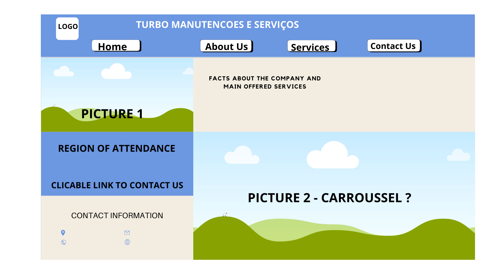

Reason for Name: It's the name of my husband's company, which represents how fast he does things.
The website will showcase the various handyman services provided by "Turbo Manutenções e Reformas," such as electrical repairs, plumbing, furniture assembly, and painting. It will offer contact information, service descriptions, and a way for potential clients to request a quote or service.
Facts about the company, how many people has he attended until today
Visitors will want to know about the services offered, such as plumbing, electrical work, and home renovations.
Contact Information
This is important for potential clients looking for ways to get in touch for quotes or inquiries.
Primary Color: #6c97e1 – Used for headings, and bottom and accents to convey trust and reliability.
Secondary Color: #f3ede1 - Used for backgrounds
Button Color: White (#FFFFFF) –Button/text color when used on primary color to create clarity and readability.
Text Color: black (#00000) - Used for text inside secondary color or buttons to create readability
Heading Font: "Roboto", sans-serif – Used for headings to give a modern and clean feel.
Body Font: "Arial", sans-serif – Used for paragraphs and general text to ensure readability.
Mobile View: Simple layout with a header, followed by a section introducing the services, then a contact information at the bottom.
Desktop View: More spread-out layout, with a navigation bar at the top, followed by sections for each service (e.g., electrical, plumbing), and a contact information at the bottom.